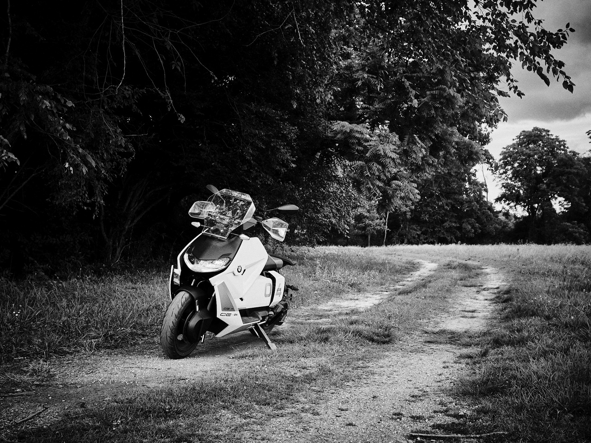
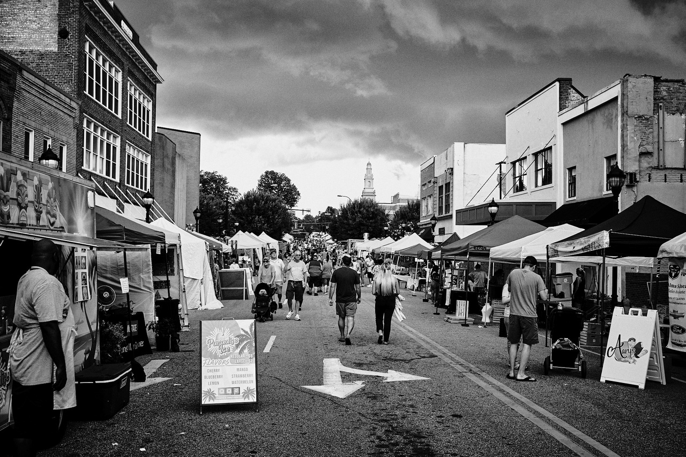

ISO Native Lands: Day 2 (Rutherfordton↝Hickory)
Today is the day of the twisties that I've been dreaming about, with roughly 180 miles of riding through the Blue Ridge Mountains ahead on my trusty BMW CE-04.
Breakfast at the Carrier House Bed & Breakfast was incredible: a creamy parfait, a savory souflée, and excellent coffee. I regret not exploring Rutherfordton, as it's one of the oldest towns in North Carolina (1787). It was also named after a general who inflicted considerable damage on the nearby Cherokee tribes in the Cherokee–American wars.
Alas, the hills were calling my name.
Onward to Lake Lure!
The last time I rode a motorcycle through the mountains was in 2010, so I'm feeling a bit rusty as Polk County Line Road begins to twist before continuing to Grassy Knob Rd. It's a great feeling wandering amidst the country orchards. I spy an Ornate Box Turtle crossing the road at one point and use my bike to block its safe passage.
At the intersection of Highway 9 & Highway 64, the mythical Lake Lure comes into view. The scene of parts of Dirty Dancing, the lake itself, is relatively young, only coming into being in 1927. Some wiseguy developer imagined this would be an excellent site for a lake resort, so he founded Carolina Mountain Power Company, which went on to dam the Broad River and built a hydroelectric plan to power his resort town.
Lake Lure is incredibly picturesque. I didn't need to charge here, but there was a free charger at the visitor center, and I wanted to walk around and take photos.
Chimney Rock
Chimney Rock is part of the Hickory Nut Gorge, sacred to the Cherokee and Catawba Indians. They tell tales of this being the land of the Yunwi Tsunsdi', or small dwarf or fairy-like humanoids who live in the rock caves. They were the guardians of the sacred tsa'lu (tobacco) and took action against those who hoped to harvest it.
Chimney Rock overlooks the Gorge and Broad River and is a State Park. The road leading up to it is slow, windy, and picturesque.
To get to the top, you can take an elevator or stairs that wind through boulders and bat caves. There are many places for Yunwi Tsunsdi' to hide, so watch your step.
Heading across the Broad River from the park is a cute tourist trap of a town. I get questioned by walkers about the scooter, check out the river, and move on.
Old Fort
Now the roads are getting twistier, which gets me pumped for the adventure to come.
My next stop was Old Fort, where the visitor center has two free EV chargers: one J1772 and one Tesla (NACS). The J1772 charger was in use by another BMW, so I was glad to have the TeslaTap Mini adapter handy for the CE-04. The driver on the other charger was nice enough to come out to ask if I wanted to swap spaces with them, but it wasn't necessary.
Downtown was small but charming, with a brewpub that I wish I had been able to try. I wasn't hungry and have a strict rule about no alcohol on two wheels. I had a very uncomfortable time riding through Belgium once, where I stopped for what should have been a long lunch and got a beer, but we had to leave early.
There was a lovely outdoor museum with 18th-century buildings from the area and what seemed to be the world's most depressing craft market. Even under their shady tents, the craftspeople had wilted in the heat, and no one looked like they wanted to be there.
On the way out, I passed Davidson’s Fort, which the town was named after. I hadn't planned to stop by - due to its controversial existence - but I was at the entrance anyways, so I wandered in.
I peeked inside the fort and saw that it was occupied only by reenactment actors setting up, so I began to walk back to the bike. One of the leaders noticed me taking photos and encouraged me to come in and check things out.
I'm glad I did, as I got an excellent 20-minute overview of the fort's history. I'll spare you the details, but if you are interested, see the Wikipedia article on it - suffice to say, the fort has a particularly bloody history, including being the base from which Rutherfordton wiped out the towns of the Lower Cherokee.
I took the bizarre way out of Old Fort recommended by the Nav software "Windy" mode, hitting small country backroads such as Cane Creek Rd and Mackey Creek Rd toward Marion.
I'm glad I did because the roads were both picturesque and fun to ride:
Little Switzerland & Blue Ridge Parkway
Little Switzerland has been on my "to-ride" list for years. It's a little slice of twisty-road heaven an hour east of Asheville, where two famously twisty roads intersect with the Blue Ridge Parkway: Highway 226A and Highway 80. Riding up Highway 80, I was having the time of my life. Seriously, I haven't had this much fun in YEARS! I couldn't help but feel I was truly living my best life here. Even the Blue Ridge Parkway section made for sublime riding. While the BRP is not exceptionally technical riding, it makes up for it in natural beauty and flow.

Little Switzerland lacks a central area to walk around, but it does have several hotels, cafes, bookstores, and a handful of EV chargers. I chose to stop at the Little Switzerland Books & Beans, as my body and bike could use the energy boost.
Afterward, I had to pick between 226A (AKA the “Diamondback”), which, while world-famous for excellent riding, would return me to Marion, where I had just come from, and continuing the Blue Ridge Parkway through Linville Gorge, which would get me much closer to Morganton.
Wanting to get to Lenoir by dinner, I chose the latter. I have a small ounce of regret for missing out on 226A, but it gives me a good reason to return later.
Joara, Fort San Juan
One of the most important locations in North Carolina history lies off of an unmarked and unnamed gravel road off Hendersonville Rd, just north of Morganto: Joara.

This place does not have an address or sign and was so understated that I even turned around once, unsure if this was the correct place and fearful of trespassing onto a rabid gun-owner property.
Joara was a bustling Native American town and chiefdom from 1000 AD to ~1650 AD. It was visited by the Spanish in 1540, and in 1567 they made the first European settlement in North Carolina, Fort San Juan, at Joara's northern edge. Fort San Juan was also the first European settlement in the
Why have a fort so far inland? The Spanish were trying to find an overland route to the Spanish silver mines in the mountains of Mexico and figured that the Appalachians might be part of the same range. The early Spanish expeditions in America have a truly fascinating history, almost to the point of unbelievableness.
Morganton
My next step was Morganton, where at the back of one of Catawba Meadows Park parks is a replica Native American village, representing what a small section of a local village such as Joara might have looked like:
Unfortunately, I arrived just after the exhibit's closing time, so that's all there was except a sign talking about Joara. I headed downtown to top off my bike before heading North again. Morganton has a pretty courthouse if nothing else:
Lenoir and Hickory
Since I knew I would be in Morganton, I checked in on some old colleagues from Google who lived in Lenoir - the site of Google's North Carolina data center.

Lenoir has much more going on than when I first visited some 15 years ago. The fact that tonight was their annual Blackberry festival helped to make that impression, but even without it, I could tell things had changed for the better.
The lively festival was quickly dashed by torrential downpours, which thankfully coincided with getting dinner with my old friends.
This is Debby, Dave, and me:
We hung out for a while, and once it stopped raining, I quickly said my goodbyes and raced toward my hotel in Hickory before the second arm of the storm system could reach me. A few laws may have been broken, but I'm proud to say I made it to the hotel mostly dry.
Once I dropped my things off, I went to move my bike to the back of the hotel to charge overnight, and the skies just opened up. We're talking dime & nickel-sized raindrops.
Rain wouldn't have been a problem, except the charger was managed through Shell Recharge, which requires interacting with their poorly built and forgetful application. Have you ever tried to log in with your e-mail address and password in the pouring rain? How about taking a picture of a QR code in the dark when the lens is covered in water?
It took me about 10 minutes to get the stupid thing to begin charging. In comparison, other chargers are just tap+plug or just plug.
Having a fully charged bike will save me a good amount of time tomorrow morning, so the frustration was worth it.